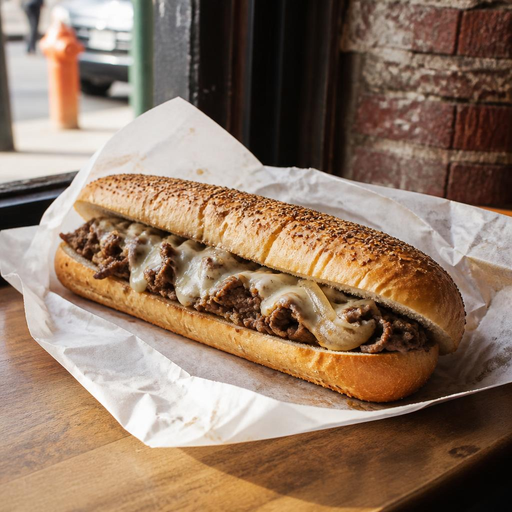
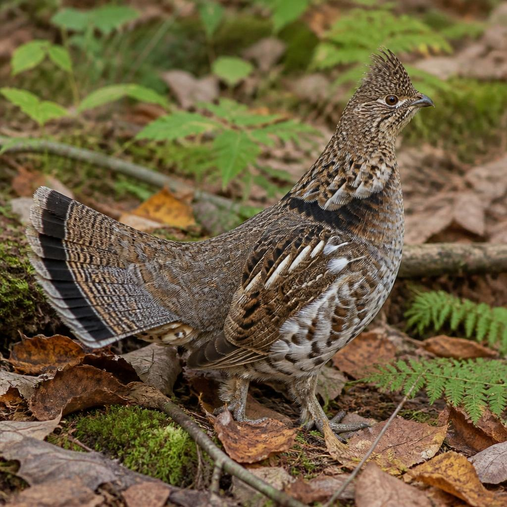

01 / A local classic
Say hello
to the cheesesteak.

Thin-sliced steak, melted cheese, and a long roll. Order it your way, then grab plenty of napkins.
A little local love
Big history, neighborhood heart, and a sandwich that needs two hands. Here’s your friendly first hello to Philadelphia.
Take a look01 / A local classic

Thin-sliced steak, melted cheese, and a long roll. Order it your way, then grab plenty of napkins.
02 / The short version
Sources: U.S. Census QuickFacts · U.S. Senate
03 / Feathered neighbor
A shy woodland bird with a pretty unmistakable ruff. Tap or press enter to give it a little shake.

Sources: Pennsylvania Game Commission
Your city hall hello
Cherelle L. Parker
Mayor of Philadelphia
Mayor’s OfficeYour turn
Make this little guide yours. Add a place, a taste, or a reason you love Philly.